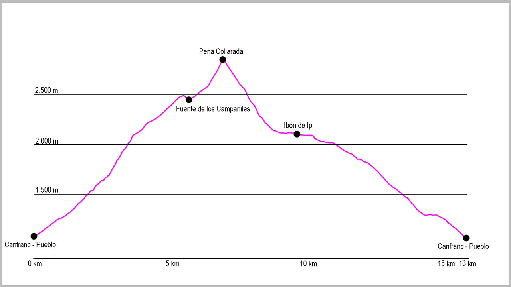

Tomaremos la salida de la ruta en el puente de arriba de Canfranc-Pueblo. Aquí cogeremos la pista que sale del aparcamiento y la seguiremos de manera ascendente. A unos 50 metros de la salida, a nuestra derecha saldrá un camino muy cómodo que tomaremos y que nos llevará poco a poco a ganar altura. Cuando llevemos aproximadamente 1 kilómetro y el camino empieza a meterse en el valle de Ip, sale a nuestra derecha una bifurcación que nos lleva a un campo abandonado. En él tomaremos dirección este nuevamente y de forma ascendente, hasta que encontremos de nuevo un sendero bastante marcado al final del mismo.
Desde aquí el camino empieza a coger inclinación rápidamente y nos conduce sin ninguna pérdida hacia el campo de Porrotó. Justo después de pasar un barranco con restos de aludes llegaremos a una zona con piedras sueltas. Aquí es muy importante girar a mitad de ella a la derecha, marcado con un hito grande, ya que si seguimos rectos pronto nos encontraremos entre árboles y ramas y sin salida. Una vez llegamos a Porrotó el camino coge una clara dirección sureste y pasamos a una zona de arbustos. Poco a poco seguimos ganando altura rápidamente para llegar al cruce de “Russel” o “Coruye”, donde giraremos a la derecha y veremos todo el barranco que tendremos que ascender.
A partir de este punto, el camino está cada vez menos pisado, por lo que será muy importante seguir las marcas de PR y los hitos existentes. Primero haremos una gran diagonal hacia el barranco y justo cuando entremos en el cauce (siempre seco) giraremos a la izquierda. Subiremos por las losas del barranco unos 100 metros, para allí girar a la derecha de nuevo y pasar hacia la margen izquierda. Aquí llegaremos a una pared de roca gris y seguiremos a su lado ascendiendo durante buen rato.
Cuando la subida empieza a ser más empinada y más cerrada, giraremos a la izquierda para cruzar por un paso picado en la pedrera de nuevo al barranco, pero esta vez lo atravesaremos y subiremos por la hierba de su margen derecha y en dirección este y ascendente.
Seguiremos ganando altura hasta llegar al farallón superior, y en este momento empezaremos a rodearlo hacia el sur, evitando varias chimeneas que salen enfrente nuestra. Mientras giramos iremos ganando vistas hasta que lleguemos a un árbol que nos da entrada a un paso a su izquierda para sortear el gran farallón. En este punto habrá que extremar la atención y la precaución hasta que salgamos de la chimenea, donde ya daremos vista a la Peña Collarada.
En este punto de la ruta, donde ya no tenemos un claro camino, tendremos que tomar la cima como referencia y dirigirnos hacia ella. Al poco de seguir la ascensión, veremos en medio de las campas de hierba un paso rodeado de piedra por los dos lados. Iremos en esa dirección y pasaremos por allí. Seguiremos hacia el este y manteniendo dirección hasta llegar casi a Collarada. Justo allí encontraremos un llano debajo de nosotros hacia donde nos dirigiremos, y donde encontraremos el manantial de Los Campaniles.
Desde este punto cogeremos otra vez la cima de referencia y la canal que hay justo debajo de ella para comenzar el último tramo de subida. Esta zona es una gran pedrera que ascenderemos poco a poco hasta llegar justo a la base de la chimenea que nos dará acceso a la cima. En ella tendremos que extremar la precaución y echar alguna mano, antes de girar al final de ella a la derecha y llegar a la cumbre.
La bajada empieza en dirección sur, teniendo que tener cuidado al menos en la primera parte, antes de llegar a otra pedrera. Aquí un claro camino nos conducirá hacia el collado de Ip, donde giraremos a la izquierda para afrontar el tramo más técnico de la ruta. Una pedrera de casi 500 metros de desnivel se aparece ante nosotros. Al principio hay resto de camino, pero después nos hitos pasan a ser la mejor referencia. Siempre bajaremos hacia el ibón, hacia la desembocadura de un pequeño barranco que viene de nuestra derecha, para una vez allí girar a la izquierda para bordearlo. Justo en este momento pasaremos por un manantial que sale del suelo, donde podremos coger agua. Poco después llegaremos a un paso complicado donde tendremos que pasar andando y con mucho cuidado. Desde este punto ya solo nos queda mantener el camino que bordea el ibón hasta el dique de la presa. Al llegar a él lo pasaremos y llegaremos al refugio de Ip.
En este momento cogeremos la antigua pista de las obras de construcción que nos conducirá hasta otros edificios blancos, y posteriormente a una gran roca donde giraremos a nuestra izquierda.
Desde este punto empieza la bajada, donde podemos seguir en todo momento las marcas de PR blancas y amarillas. Al principio prácticamente plana, atravesaremos una zona con bastantes bloques de piedra que han caído de la montaña, para después empezar la verdadera bajada.
Enseguida entraremos al bosque, momento en el cual la traza del sendero está mucho más marcada. Ya casi llegando al final dejaremos el cruce a la izquierda donde hemos empezado la subida al principio. Seguiremos desde este punto hasta el final de ruta, nuestro punto de partida, sin ningún problema, siempre de manera descendente y hacia el oeste hasta llegar al puente inicial.
